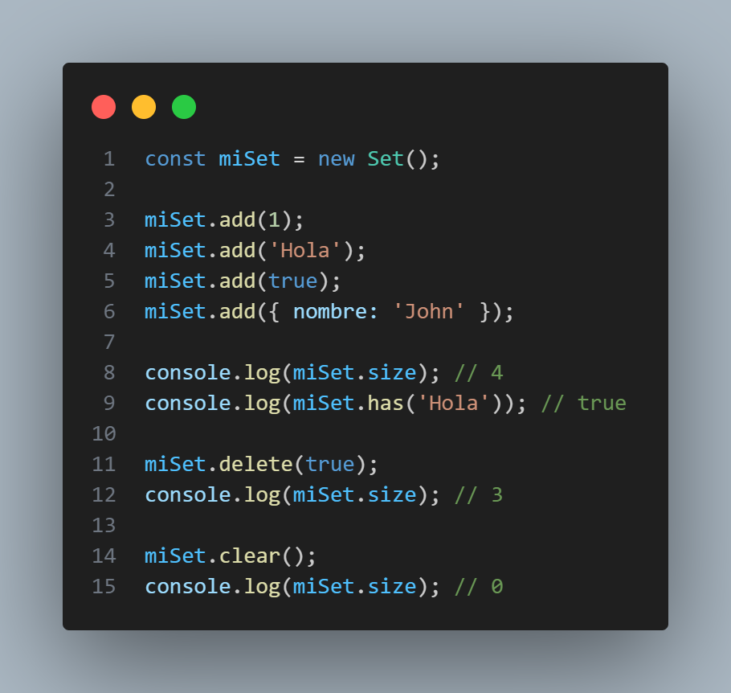

Nuevos Tipos y Características en JavaScript
JavaScript ha experimentado muchas mejoras a lo largo del tiempo, introduciendo nuevos tipos y características que permiten escribir un código más limpio, eficiente y expresivo. A continuación, se presentan algunas de las características más notables introducidas en versiones modernas de JavaScript.
Symbols:
Los Symbols son un nuevo tipo de dato primitivo introducido en ES2015. Un Symbol es un valor único e inmutable que se puede usar como clave de propiedad en objetos. Se utilizan para crear propiedades privadas y evitar colisiones de nombres en objetos compartidos.
Sets:
Los Sets son una estructura de datos introducida en ES2015 que permite almacenar valores únicos y no duplicados. Un Set puede contener cualquier tipo de valor, y se asegura de que no haya duplicados en su colección. Es similar a un Array, pero sin índices ni duplicados.
Maps:
Los Maps son otra estructura de datos introducida en ES2015 que permite almacenar pares clave-valor, donde tanto la clave como el valor pueden ser de cualquier tipo. A diferencia de los objetos, los Maps mantienen el orden de inserción y pueden utilizar cualquier tipo de dato como clave.
WeakSets & WeakMaps:
Los WeakSets y WeakMaps son variantes débiles de Sets y Maps, respectivamente. En estas estructuras, las referencias a los elementos almacenados no evitan que los elementos sean recolectados por el recolector de basura si no se utilizan en otros lugares de la aplicación. Son útiles en escenarios donde deseamos evitar fugas de memoria.
Iterables & Iterators:
Los Iterables y Iterators son conceptos clave en JavaScript que permiten iterar sobre conjuntos de datos, como Arrays o Sets, de una manera más controlada y flexible. Los Iterables son objetos que implementan un método de iteración, mientras que los Iterators son objetos que producen secuencias de valores uno por uno.

Generators:
Los Generators son funciones especiales introducidas en ES2015 que permiten pausar y reanudar su ejecución. Se definen utilizando la palabra clave function* y se utilizan para producir iteradores de manera más sencilla y legible, especialmente en situaciones donde la iteración es compleja.
Proxies:
Los Proxies son objetos especiales introducidos en ES2015 que permiten interceptar y personalizar las operaciones fundamentales en otros objetos, como obtener propiedades, establecer propiedades, invocar métodos y más. Los Proxies son útiles para implementar lógica de trampas (traps) para agregar un comportamiento personalizado en tiempo de ejecución.
Propiedades Dinámicas de los Objetos:
JavaScript permite agregar o eliminar propiedades de los objetos en tiempo de ejecución. Esto significa que los objetos pueden tener propiedades dinámicas, lo que es útil para adaptar la estructura del objeto según las necesidades del programa.

Estas características han mejorado significativamente el lenguaje JavaScript y han abierto nuevas posibilidades para escribir código más claro, expresivo y fácil de mantener. Al conocer y utilizar estas características, los desarrolladores pueden aprovechar al máximo el potencial de JavaScript para construir aplicaciones modernas y robustas.